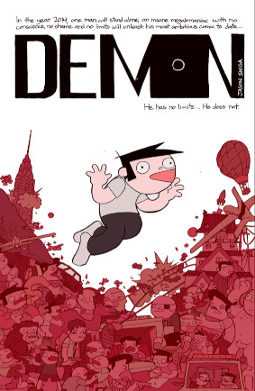

Demon

by Jason Shiga (2016)
I'm just discovering the works of Jason Shiga, creator of mathematically-inspired nonlinear comic-books, e.g. stories drawn on complex origami structures, that can be folded in various ways to represent either branching story-lines, or else to manage state such as 'inventory'. Construction of these more elaborate paper constructions doesn't scale, (ie. I'm not likely to ever own one) but you can try some of his other creations on the web.
This is Demon, a regular linear web-comic.
The storyline is 'math-inspired' too, in the same way that the movie Primer is - intense, absolute, ruthless, narrative exploration of logical implications, while continually, dizzyingly, escalating to the next level.